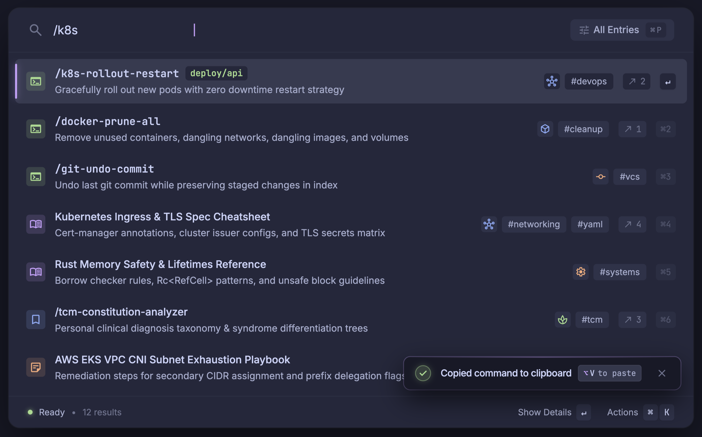

Left: switch between your design (the Stitch screen) and the proposal (the same screen built from your design's own values, with realistic data in kb's shapes). Everything is kept as you drew it unless a note on the right says otherwise. The circled numbers point at each spot that needed a decision.

Everything visual: Catppuccin Macchiato colours, 14 pt window corners, hairlines under the header and above the footer, 56 pt rows 4 pt apart with 6 pt corners, the mauve bar with its glow, tinted icon tiles, neutral grey tag pills, icon chips for tags, the ↗ link chip, small type (13 / 12 / 11), Inter + JetBrains Mono, monospace keycaps, the filter pill with ⌘P, the toast.
Filter pill as drawn: sliders icon, label, ⌘P. kb's current funnel and chevron go.
Command titles in monospace: only entries of type commands; everything else in Inter, as drawn.
Status line as drawn: the true result count comes from the index.
Magnifier on the list, back chevron elsewhere. Your list shows a search icon; kb needs a back button on the detail and rebuild screens, so it appears only there.
The deploy/api chip is gone. kb entries have no field it could come from (title, description, tags, links, type only).
Tag icons come from your tag-images folder (~/.config/kb/images/<tag>.svg), tinted in the tag's colour. A tag without an image is a grey pill. The icons here are stand-ins for your real logos.
Type colours follow your design: commands green, cheat sheets mauve with a book, bookmarks blue with a bookmark, notes peach. kb today has cheats blue and bookmarks purple; this swaps them.
Your icons are Google's Material set; kb draws Lucide (the set its UI toolkit ships). Each was swapped for its nearest twin, so shapes differ slightly.
Toast hint says ⌘V, not ⌥V: paste on macOS is ⌘V.
⌘2…⌘7 on each row need a new feature: ⌘<n> runs row n's main action. Small to build, but new behaviour. Your call below.
6 · Quick picks: keep the ⌘1–⌘9 hints on rows (and build the shortcut)?
Overall: does this feel like the design you brought?